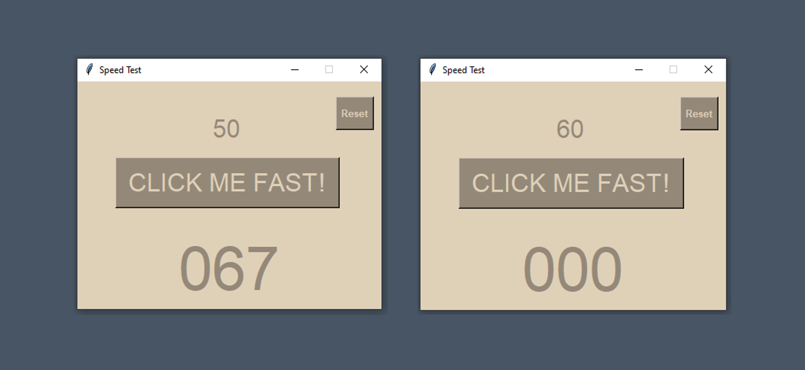

Speed Clicking Test
Speed Test is a fun app designed to test and improve your reaction speed. The game features a 400x300 window with a dark brown, and light brown color scheme. You start with 60 seconds on the timer, which counts down as you play. Each time you click the "CLICK ME FAST!" button, your score increases by one and the timer starts if it wasn't running already. If the timer reaches zero, the button is disabled and the game ends. You can reset the game at any time with the "Reset" button, which sets the timer back to 60 seconds and the score to zero. Enjoy the challenge and see how high you can score!